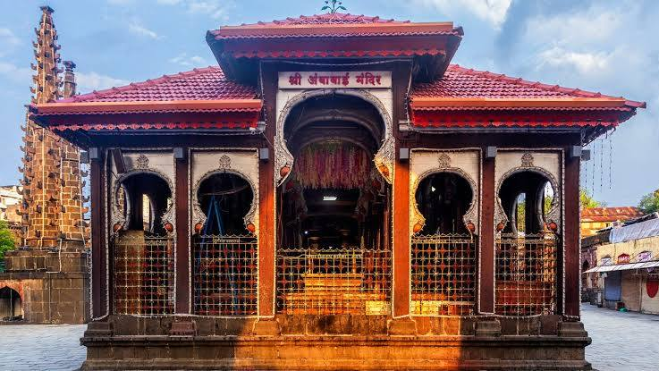
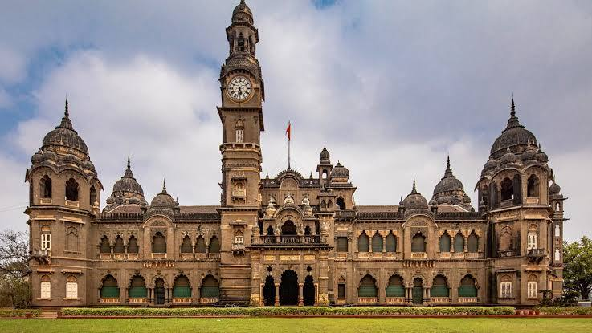
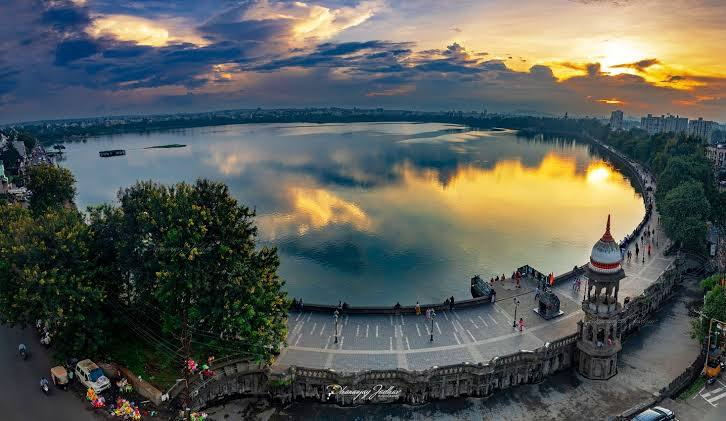
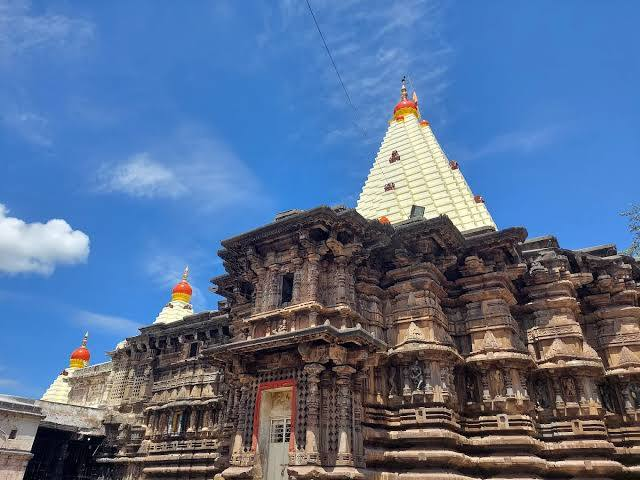
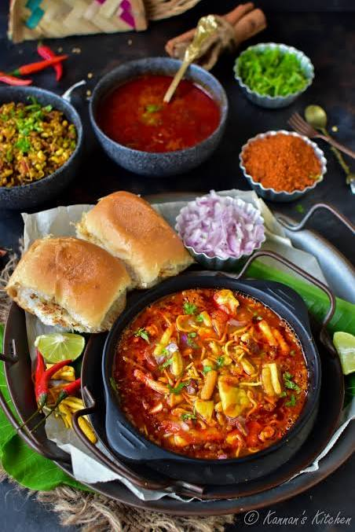
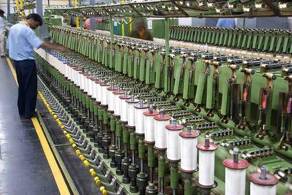
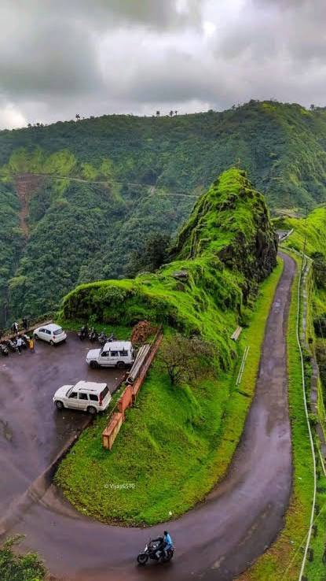
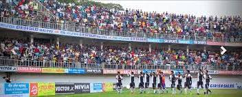

About

Kolhapur is a historic and highly developed city located in south-west Maharashtra. It sits beautifully along the banks of the Panchganga River and is surrounded by the scenic Sahyadri mountain ranges.Known fondly as "Dakshin Kashi" (Kashi of the South) because of its spiritual importance, Kolhapur blends old royal traditions with modern industrial power..
- Location:South-west Maharashtra, India (positioned along National Highway 48, about 230 km south of Pune).
- Famous as: The "Sugar Bowl of India," the historic "Kashi of the South," and home to handcrafted Kolhapuri Chappals and traditional wrestling (Kusti).
- Major sectors: Agriculture (specifically sugarcane and jaggery production), engineering foundries (textiles and automotive parts), and heavy religious and heritage tourism.
- Climate:Tropical climate (featuring hot summers from March to May, a heavy monsoon season from June to September, and mild, pleasant winters).
History

The history of Kolhapur spans over 2,000 years, starting as an ancient trade hub that dealt with Rome. Its spiritual roots grew deep in the 7th century when the Chalukyas built the famous Mahalakshmi Temple. The region became a powerhouse in 1659 when Chhatrapati Shivaji Maharaj added it to the Maratha Empire. Later, in 1707, Queen Tarabai made Kolhapur an independent Maratha kingdom.The city entered a modern golden age in 1894 under Chhatrapati Shahu Maharaj. He was a great king who fought caste bias, gave free schooling, and set up India's first job quota system. He also built dams, opened textile mills, and boosted sports. After the British left, Kolhapur joined independent India on March 1, 1949.
- Ancient Roots: Originally thrived under the ancient Satavahana dynasty as a major trade hub, later ruled by the Chalukyas and the 12th-century Shilahara dynasty who built its grand temples.
- Key Rulers: Chhatrapati Shivaji Maharaj, Queen Tarabai (who founded the Kolhapur throne), and the legendary social reformer Chhatrapati Shahu Maharaj.
- Historic Sites: Panhala Fort, Vishalgarh Fort, the New Palace (Shahu Museum), and the ancient Mahalakshmi (Ambabai) Temple.
Culture

Kolhapur is a vibrant cultural capital that seamlessly blends its rich royal legacy with deep-rooted traditions. Known across Maharashtra for its unique lifestyle, the city is famous for its fierce love of traditional sports, arts, and festivals. The spirit of the city comes alive during Vijayadashami (Dussehra), which is celebrated with massive royal pageantry, and Navratri, which draws lakhs of devotees to the ancient Mahalakshmi Temple. Music and theater also run deep in Kolhapur's veins; it is regarded as the cradle of Marathi cinema and the birthplace of Lavani folk dance and classical vocal traditions that continue to shape Indian art.
- Main Festivals: Ganeshotsav, Diwali, Navratri & Dussehra (celebrated with grand royal pageantry), and the annual Khasbag Maidan Wrestling Festival.
- Traditional Arts: Kolhapuri Kusti (clay wrestling), Marathi cinema and theater, and traditional Powada (ballad singing).
- Language: Marathi (specifically the distinct, fast-paced Kolhapuri dialect)
Tourism

Kolhapur is a major tourism destination that perfectly combines spiritual journeys with historic exploration and scenic relaxation. The absolute heart of the city’s tourism is the ancient Mahalakshmi Temple, a grand 7th-century spiritual site that draws millions of pilgrims every year to seek blessings from the goddess Ambabai. Just a short drive from the city sits the massive Panhala Fort, a historic hill station filled with Maratha empire history, old battle secrets, and beautiful green views of the Sahyadri mountains.Within the city limits, tourists love visiting the stunning New Palace, a grand royal home featuring an incredible museum packed with weapons, clothes, and treasures from the era of King Shahu Maharaj. For a relaxed evening, travelers and locals gather at the historic Rankala Lake to enjoy peaceful boating, sunset views, and delicious local street snacks like spicy Misal Pav. Additionally, the nearby hilltop Jyotiba Temple is a must-visit site famous for its bright pink powder celebrations that paint the whole mountain in beautiful colors.
- Mahalakshmi Temple: The ancient 7th-century spiritual site that sits right in the heart of the city and draws millions of pilgrims.
- Panhala Fort: The massive historic hill fort located just on the outskirts, offering breathtaking views and deep Maratha history.
- New Palace Museum: A stunning royal palace that showcases an incredible collection of weapons, clothing, and treasures of the kings.
- Rankala Lake: A beautiful, historic lake perfect for evening walks, peaceful boating, and tasting famous local street food.
Famous Food

Kolhapur is a dream destination for food lovers, celebrated across India for its bold, fiery flavors and rich culinary traditions. The absolute star of the city's food culture is its legendary non-vegetarian cuisine, famous for two distinct mutton broths called Tambda Rassa (a spicy, fiery red gravy) and Pandhra Rassa (a smooth, comforting white gravy made with coconut milk and spices). These delicious soups are served alongside perfectly spiced mutton sukka and soft bhakri bread.For vegetarians and street food fans, Kolhapur offers the world-famous Kolhapuri Misal Pav, a lipsmacking, extra-spicy sprout curry topped with crunchy farsan, fresh onions, and lemon, served with soft bread rolls. The city is also famous for its sweet, golden Kolhapuri Jaggery (cane sugar), which is used to make local desserts and brings a perfect balance to the region's otherwise fiery palate.
- Famous dishes: Kolhapuri Misal Pav, Mutton Thali (featuring Tambda and Pandhra Rassa), Mutton Sukka, and Akkha Masoor (a rich, whole-lentil curry).
- Local Specialty: Kolhapuri Jaggery (Gul), which is famous nationwide for its light golden color, natural sweetness, and absolute purity.
Economy

Kolhapur has a highly developed economy driven by industrial manufacturing and rich agriculture. Known as the "sugar bowl of India," the district produces massive amounts of sugarcane and premium jaggery through its powerful cooperative factories. It is also a major industrial powerhouse, famous for its massive automotive engineering foundries and textile hubs like Ichalkaranji. Additionally, the city earns high revenues from traditional crafts like handcrafted leather Kolhapuri Chappals and a booming religious tourism industry centered around the Mahalakshmi Temple.
- Key Industries: Automotive Foundries, Textile Manufacturing, Sugar Processing, and Religious Tourism.
- Main Crops: Sugarcane, Rice, Jowar (Sorghum), and Groundnuts.
Environment

Kolhapur District enjoys a rich and diverse environment shaped by its unique location along the lush Sahyadri mountain ranges of the Western Ghats. The region is blessed with a tropical climate, featuring warm summers, mild winters, and heavy monsoon rains that fill its major lifelines like the Panchganga, Krishna, and Bhogavati rivers. This abundant water supply supports thick, evergreen forests that act as vital green lungs for south-west Maharashtra. These eco-sensitive forest zones are home to incredible biodiversity, including rare plants, tigers, leopards, and bison, which are protected within major wildlife sanctuaries like Radhanagari and Chandoli.
- Climate: Tropical climate, featuring hot summers (March to May), a heavy monsoon season (June to September), and mild, pleasant winters.
- Key Rivers: Panchganga River, Krishna River, Bhogavati River, and Dudhganga River.
- Protected Areas: Panchganga River, Krishna River, Bhogavati River, and Dudhganga River.
Sports

Kolhapur boasts a thrilling and deeply passionate sports culture that revolves around traditional grit and royal heritage. The absolute heartbeat of the city's sports scene is Kolhapuri Kusti (traditional clay wrestling), making it the ultimate capital for wrestlers across India. Young athletes live and train rigorously in historic, boarding-school-style gyms called Talims, aiming to win the prestigious Maharashtra Kesari title. The city is home to the legendary Khasbag Maidan, a massive, century-old wrestling stadium built by the royals that features a unique circular seating layout where over 20,000 fans gather to roar for their favorite fighters.
- Traditional Sports: Kolhapuri Kusti (clay wrestling), Football, and Kabaddi.
- Key Venues: Khasbag Maidan (the historic wrestling arena), Rajarshi Shahu Stadium (the bustling football hub), and numerous historic Talims.
- Focus: Nurturing elite, power-focused athletes for Olympic sports (like wrestling and weightlifting) and hosting hyper-competitive local club football leagues that draw massive city crowds.